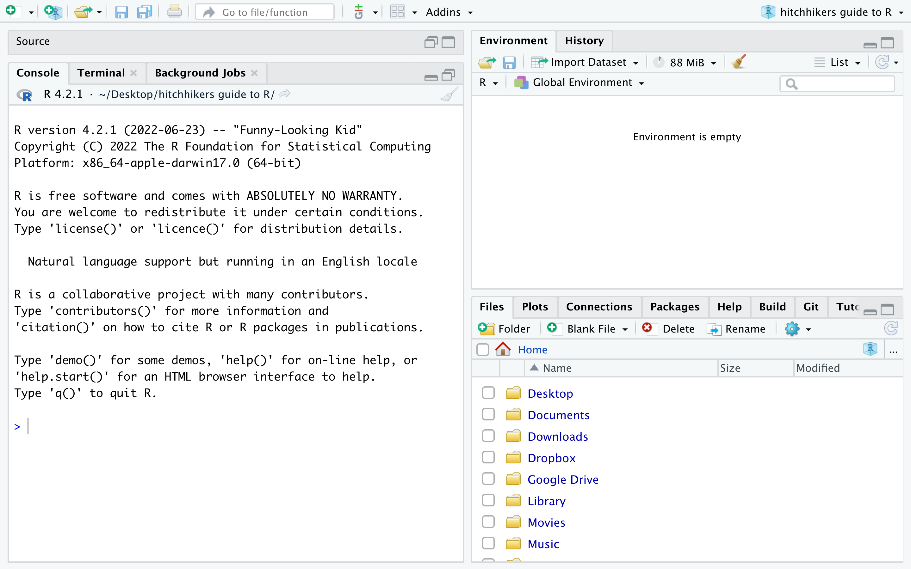

(3 * 2 + 1) ^ 2[1] 49The best way to get comfortable with R is to actually use it to work with data. By the end of this chapter, you’ll have seen how to load in a csv or excel spreadsheet and use R to get basic information about your variables. You’ll also have a strong idea of what the R learning process will be like. Spoiler: it’s a joy.
When you first open RStudio, you may feel a bit overstimulated. By default, there are three separate panes, most of which have multiple tabs. Don’t worry! While all of these have their uses, as we’ll see, you can safely ignore almost all of it when you’re getting started. In our first R session, we’ll stick almost entirely to the Console pane (the one with the old-school text welcome message). All the grey boxes in this chapter show code from the console, together with the resulting output. Obviously, you should be coding along and trying new thigns out as you read!

At the most basic level, R is just a scientific calculator. You can do all the usual arithmetic operations, either one at a time or all at once.
(3 * 2 + 1) ^ 2[1] 49As you can see, R follows standard order of operations. It also includes the full variety of standard mathematical functions, like absolute value and sine, as well as values for important constants like \(\pi\).
abs(-12)[1] 12sin(pi/2)[1] 1Don’t worry - we’re done with trig for the rest of this book.
As in any programming language, you can assign values to variables and then use those variables in your calculations. These variables don’t have to be single letters; in fact, as a general rule you should avoid such short names.
practice_variable <- 12
practice_variable + 2[1] 14In R, the left arrow is used for assignment. While an equal sign (the norm in most languages) will work in R, it’s better to reserve that symbol for other things. This makes sense for a number of reasons, including this one: the mathematical equal sign is symmetric (so a=b is the same thing as b=a), while assignment is directional.
Notice that in the above code chunk, the calculation auto-printed by default, but the assignment didn’t. We got output back after the second line but not the first. Both of these are typical R behavior.
As a matter of practice, you should give your variables descriptive names even when it adds a few keystrokes to your workflow. Eventually, your code will get complicated and you’ll be sharing it with others who will appreciate explicit clues as to what everything means. In general, the best variables names are nouns (that are both descriptive and brief.
When working with data, we usually have many observations of each variable. Most of R’s core functions are built explicitly to respect this need, starting with variable assignment. For instance, the following code stores five temperature readings in a single vector and then takes their average.
temp <- c(98.2, 97.9, 98.5, 98.2, 98.4)
mean(temp)[1] 98.24A vector in R is just an ordered sequence of numbers (or other type of data, as we’ll discuss in the next chapter). The letter c, which stands for concatenate, lets R know that a vector is being created.
There are many, many functions which, like mean(), take vectors as arguments and give individual numbers back. A few other common ones are sd(), sum(), min(), max(), and length(). Explore to find more!
Other functions return a vector instead. For instance, you can probably guess what sort(temp) will return. But can you figure out what diff() is doing in the following chunk?
diff(temp)[1] -0.3 0.6 -0.3 0.2Most computations in R are vectorized, meaning that they can be applied as easily to vectors as individual values. For instance, the following code converts every value in the temps vector from Fahrenheit to Centigrade, then prints the result.
temp_c <- (temp - 32) * 5/9
temp_c[1] 36.77778 36.61111 36.94444 36.77778 36.88889Addition, subtraction, multiplication, and division of vectors is handled component-wise, meaning that R always looks at corresponding elements of the vectors in question.
ambient_temp <- c(68.2, 69.3, 67.3, 70.0, 68.3)
temp - ambient_temp[1] 30.0 28.6 31.2 28.2 30.1If you’re a math person, you should take particular note of the fact that multiplication works this way as well, regardless of what you were taught in linear algebra class.
temp * c(2, 4, 3, 10, 1)[1] 196.4 391.6 295.5 982.0 98.4Most built-in R functions are also vectorized, meaning they will operate component-wise in the natural way. For instance, the following code takes the natural logarithm of all the temperatures in our little data set.
log(temp)[1] 4.587006 4.583947 4.590057 4.587006 4.589041Many R functions give the user the option of specifying additional information to refine the way the inputs are processed. The log() functions is a case in point. By default, it compute the natural logarithm, that is, the logarithm with base \(e\). We can change this by specifying the base argument.
log(temp, base = 10)[1] 1.992111 1.990783 1.993436 1.992111 1.992995While R will often allow you to omit the name of the argument, as in the following chunk, you should be judicious in your use of that shortcut.
log(temp, 10)[1] 1.992111 1.990783 1.993436 1.992111 1.992995Clear code helps minimize errors and makes troubleshooting easier - well worth the investment of a few extra keystrokes.
For the first time, let’s look at a pane other than the console. In the upper-right quadrant of your RStudio window, you have two helpful tabs. The first of these, Environment, shows all the user-defined objects that R currently has stored in it’s memory. Currently there are four vectors, ambient_temp, practice_variable, temp, and temp_c. All are numeric vectors (we’ll learn about other types of vectors shortly) and all except practice_variable have length 5. Since the length of practice_variable is one, RStudio just displays its value, not its structure, in the Environment pane.
Next to this is the History tab, which shows commands that have been executed recently. If you want to re-run one of these commands, you can double-click to send it to the console, where it can be executed as usual.
While reading data into R (or any other system) can get complicated, RStudio makes it easy to import the most common sort of set: the spreadsheet. In the lower-right pane, you’ll find a tab labelled Files, which you can use to browse around your machine until you find the spreadsheet you need.
(insert image with arrows)
Notice the breadcrumbs at the top of the Files pane describing your current location. Clicking on one of these will move you back toward your root, while clicking folders in the browser itself will move you away from it. Once you’ve found the file you want, select it and then click Import Dataset from the little menu that appears.
[image showing import of temperatures.csv]
A warning to those of you that might be more experienced coders: navigating around in Files tab doesn’t change R’s working directory, as you can check with getwd(). While it’s possible to change this with setwd(), that’s usually not best practice. More about this in chapter (insert ref).
You’ll now get a popup showing, among other things, a preview of the spreadsheet and a recommended code snippet to import it. For most day-to-day purposes, it’s totally fine to ignore this window entirely and just click the Import button, which will close the popup and execute the snippet. For more details about how to customize all of this, see chapter (insert ref).
The spreadsheet is now saved in R’s working memory, as you can see by checking the Environment tab. RStudio will also automatically open up a fuller preview of the set in a new pane in the upper-left. You can scan around, search, and sort by column values here, if you like.
If you look back to your console, you’ll see the code that RStudio has used to make all this happen. We’ll put off talking about library() until in the next chapter and read_csv() much later (insert ref), but View() is worth noticing right away. This is the command that actually caused R to display the data set in that new pane. You’ll find yourself using this command occassionally throughout your data science career.
This view is intended as a convenience, not as a real working tool, meaning that R is fundamentally different in its approach than spreadsheet software like Excel. Any real data reorganization or manipulation will take place via our code.
Fundamentally, R views a data frame like temperatures as a collection of columns, each one of which is a vector. To refer to one of these vectors, use the format set$variable, like so:
temperatures$ambient_temp[1] 68.2 69.3 67.3 70.0You can do all the usual things to such a vector, like finding its median.
median(temperatures$ambient_temp)[1] 68.75Add a new or modify a column with the assignment operator:
temperatures$difference <- temperatures$temp - temperatures$ambient_temp
temperatures# A tibble: 4 × 3
temp ambient_temp difference
<dbl> <dbl> <dbl>
1 98.2 68.2 30
2 97.9 69.3 28.6
3 98.5 67.3 31.2
4 98.2 70 28.2In chapter (ref) we’ll learn a more general and flexible (but also more verbose) way to add or change columns in a data frame using the mutate() command.
Finally, there are many functions in R that accept data frames as arguments. For instance, nrow(temperatures) and ncol(temperatures) return the length and width, respectively, of the data frame, while colnames(temperatures) returns, well, the column names. Finally, summary() will provide a six-number summary of each quantitative variable in the set.
summary(temperatures) temp ambient_temp difference
Min. :97.90 Min. :67.30 Min. :28.2
1st Qu.:98.12 1st Qu.:67.97 1st Qu.:28.5
Median :98.20 Median :68.75 Median :29.3
Mean :98.20 Mean :68.70 Mean :29.5
3rd Qu.:98.28 3rd Qu.:69.47 3rd Qu.:30.3
Max. :98.50 Max. :70.00 Max. :31.2 R comes with quite a few data sets pre-loaded for you to practice with. For instance, the faithful set includes 272 observations of eruptions of the Old Faithful geyser in Wyoming, USA. Take a look at the set with View(faithful) and learn a little more about it with ?faithful.
You can do all the same things with faithful as you can with the imported data set temperatures. For instance, faitful$eruptions is a vector of length 272 and mean(faithful$eruptions) gives its numerical average (about 3.5 minutes). You can also begin to explore relationships between variables, for instance by computing the correlation between eruption length and time between eruptions.
cor(faithful$eruptions, faithful$waiting)[1] 0.9008112You can see a complete listing of R’s built-in data sets with data().
5 pages
Approx 2 pages
1 page
1 page